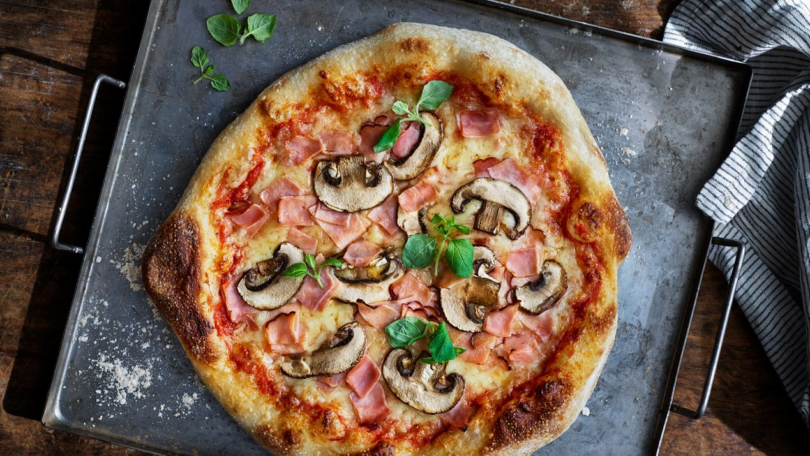
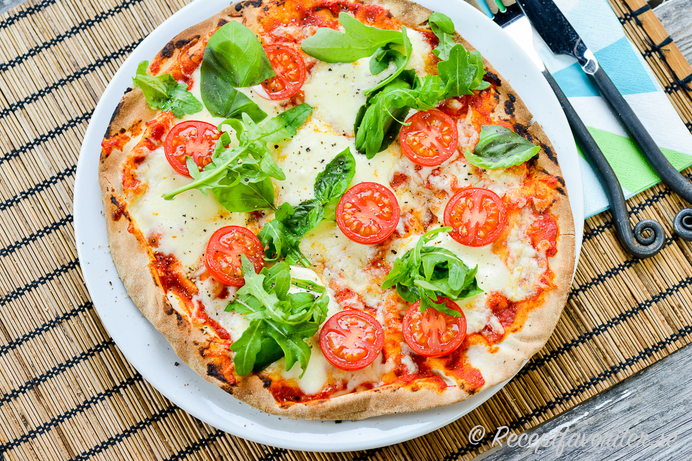
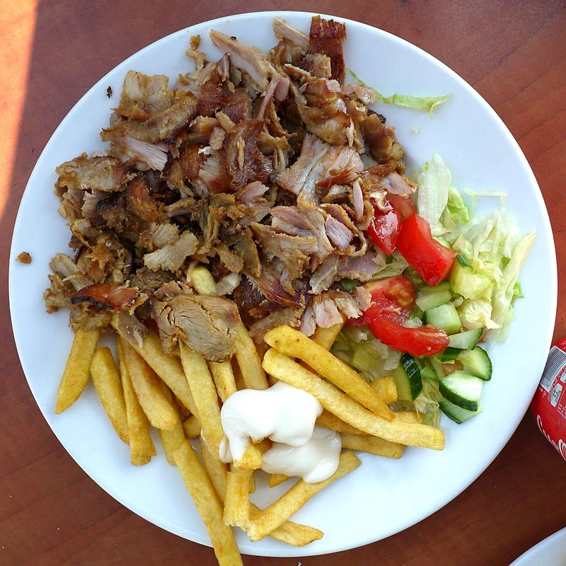
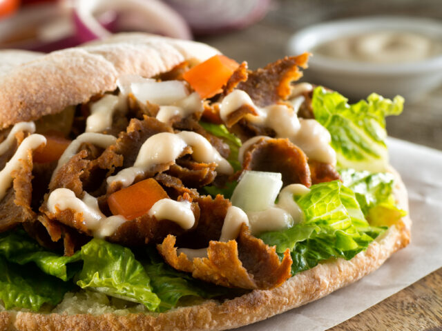
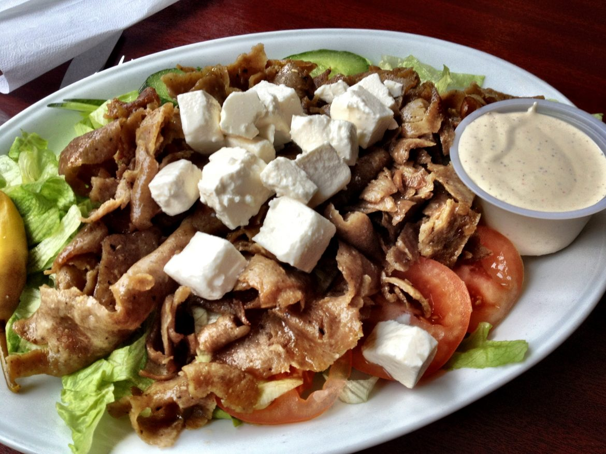

Östermalms`s pizzeria
—meny—

Pizza klass 1 - 95kr
- Margarita - Tomatsås, pizza ost
- Vesuvio-Tomatsås,pizzaost,skinka
- Al Fungi - Tomatsås, pizza ost, färska champinjoner
-
Capricciosa - Tomatsås, pizza ost, färska champinjoner, skinka
- Hawaii - Tomatsås, pizza ost, skinka, ananas

Pizza klass 2 - 105kr
-
Kebab MIX - Tomatsås, ost, Kebabkött, Gyroskött (valfri sås)
-
Lenio - Tomatsås, ost, kyckling, ananas, banan, curry (Valfri
sås)
-
Venedig - Tomatsås, ost, skinka, färska champinjoner, räkor
-
Quattro - Tomatsås, ost, skinka, färska champinjoner, musslor,
räkor
- Hawaii special - Tomatsås, ost, skinka, ananas, räkor

Tallrikar - 95kr
-
Kycklingtallrik - Kyckling, isbergssallad, gurka, tomat, rödlök,
pommes, pepperoni (Valfrisås)
-
Falafeltallrik - Falafel, isbergssallad, gurka, tomat, rödlök,
pommes, pepperoni (Valfrisås)
-
Kebabtallrik - Kebabkött, isbergssallad, gurka, tomat, rödlök,
pommes, pepperoni (Valfrisås)
-
Gurostallrik - Gyroskött, isbergssallad, gurka, tomat, rödlök,
pommes, pepperoni (Valfrisås)

I bröd - 95kr
-
Kycklingrulle - Kyckling, isbergssallad, gurka, tomat, rödlök,
pepperoni (Valfrisås)
-
Falafelrulle - Falafel, isbergssallad, gurka, tomat, rödlök,
pepperoni (Valfrisås)
-
Kebabrulle - Kebabkött, isbergssallad, gurka, tomat, rödlök,
pepperoni (Valfrisås)
-
Gyrosrulle - Gyroskött isbergssallad, gurka, tomat, rödlök,
pepperoni (Valfrisås)
-
Pitabröd - Kyckling, isbergssallad, gurka, tomat, rödlök,
pepperoni (Valfrisås)

Sallader - 95kr
-
Kycklingsallad - Kyckling, isbergssallad, gurka, tomat, rödlök,
pepperoni (Valfrisås)
-
Falafelsallad - Falafel, isbergssallad, gurka, tomat, rödlök,
pepperoni (Valfrisås) (VEG)
-
Kebabsallad - Kebabkött, isbergssallad, gurka, tomat, rödlök,
pepperoni (Valfrisås)
-
Gyrossallad - Gyroskött, isbergssallad, gurka, tomat, rödlök,
pepperoni (Valfrisås)